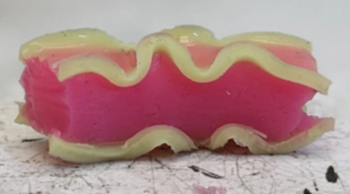
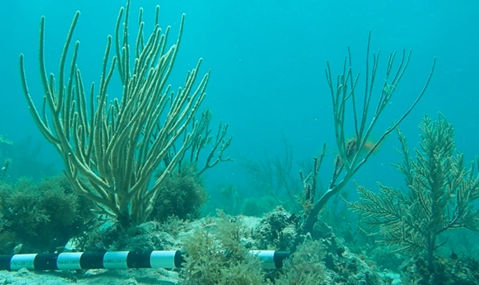
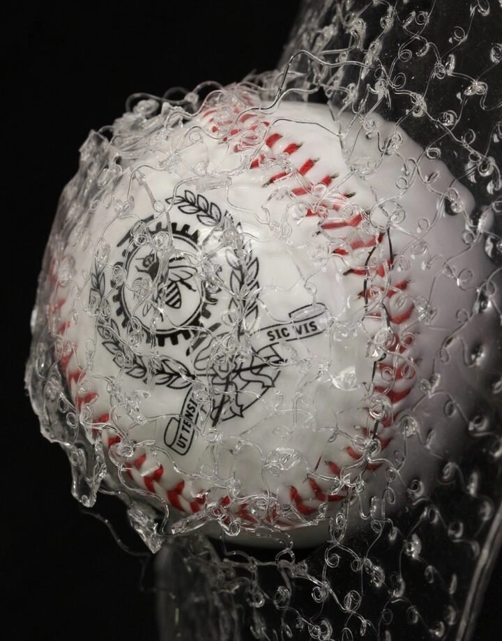

Bio-inspired shape change
Project description to come.
Research theme
Living structures often change shape through the mechanics of their own tissues. We study how geometry, growth and the distribution of material properties combine to produce functions such as folding, wrinkling and adaptation to flow.
We use mechanical models and physical experiments to test which features govern a response. A simplified specimen can help us examine the role of one variable, such as the stiffness of a tissue layer or the geometry of a surface.
Natural shapes carry a record of how they formed and what loads they experienced. Understanding that history can explain why relatively small changes in growth or geometry produce markedly different forms.
The same analysis gives engineers testable design principles. A growth-driven change in curvature, for instance, can suggest how to arrange swelling materials in a synthetic sheet so it changes shape when activated.



This work can inform the design of lightweight structures, compliant surfaces and devices that respond to their environment through the properties of their materials.